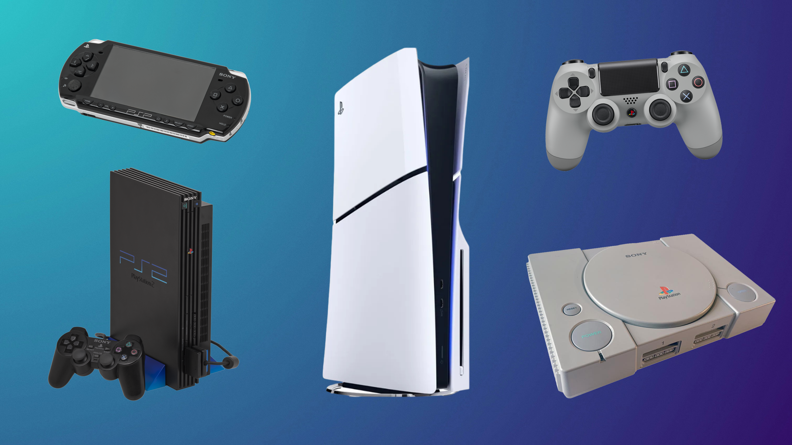

About SONY
PlayStation is a video gaming brand that consists of five home video game consoles, two handhelds, a media center, and a smartphone, as well as an online service and multiple magazines. The brand is produced by Sony Interactive Entertainment, a division of Sony.
The first PlayStation console was released in Japan in December 1994, and worldwide the following year. The original console in the series was the first console of any type to ship over 100 million units, doing so in under a decade. Its successor, the PlayStation 2, was released in 2000; it is the best-selling home console to date, having reached over 155 million units sold by the end of 2012. Sony's next console, the PlayStation 3, was released in 2006, selling over 87.4 million units by March 2017. Sony's next console, the PlayStation 4, was released in 2013, selling a million units within a day, becoming the fastest selling console in history. The latest console in the series, the PlayStation 5, was released in 2020 and sold 10 million units in its first 249 days, unseating its predecessor as the fastest-selling PlayStation console to-date. The main series of controllers utilized by the PlayStation series is the DualShock, a line of vibration-feedback gamepads that sold 28 million units by June 2008.
